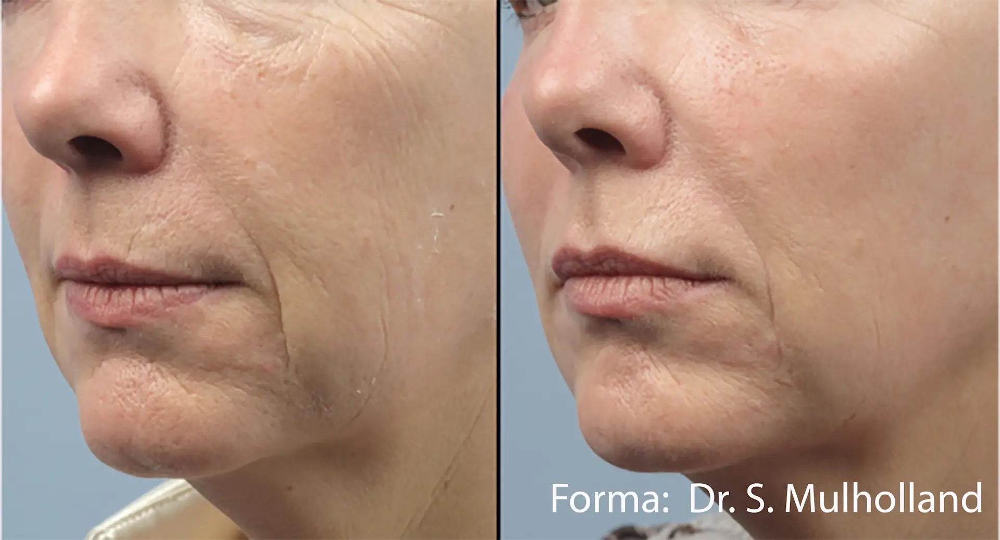
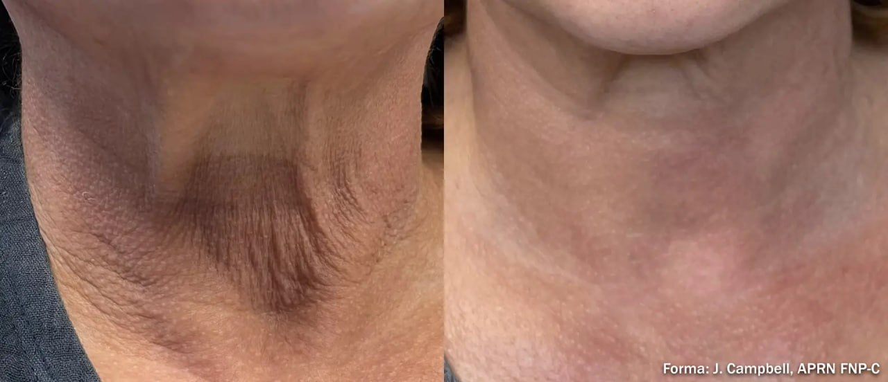
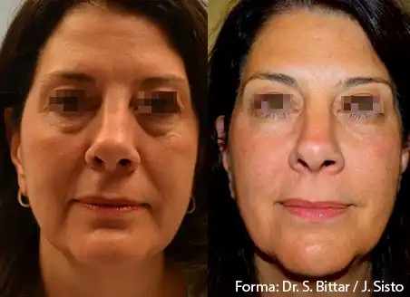
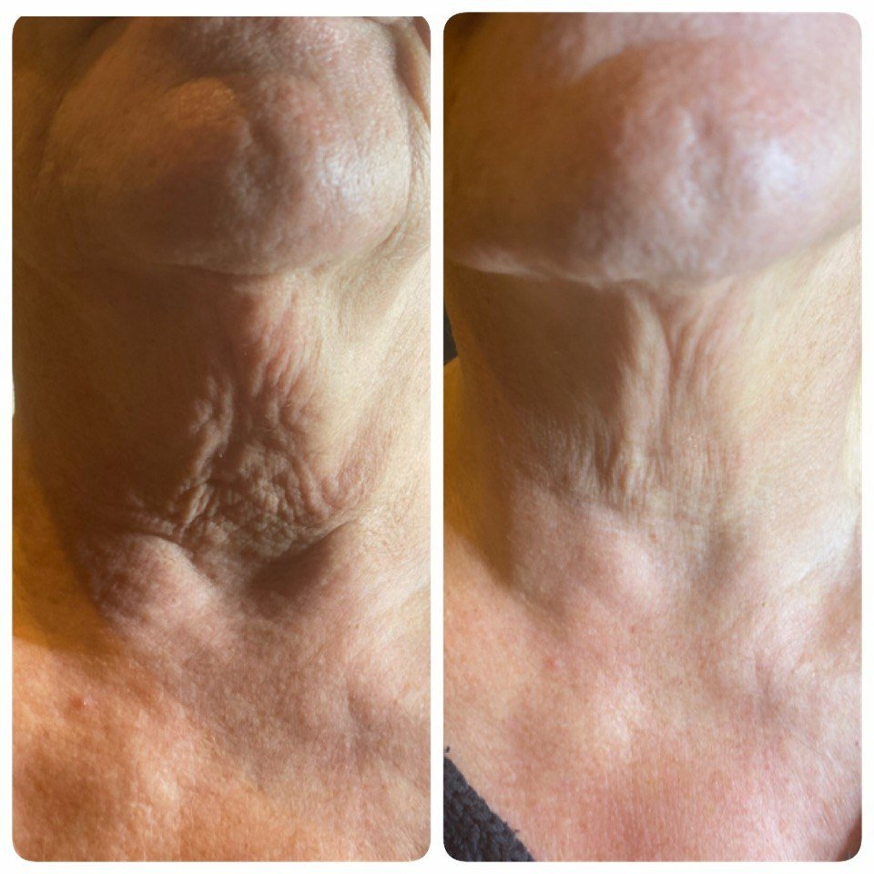
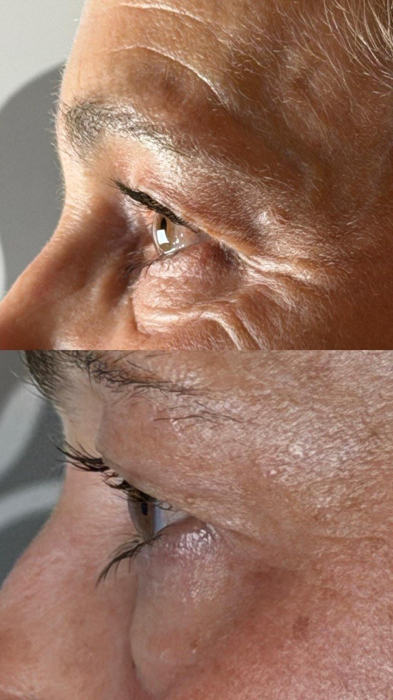
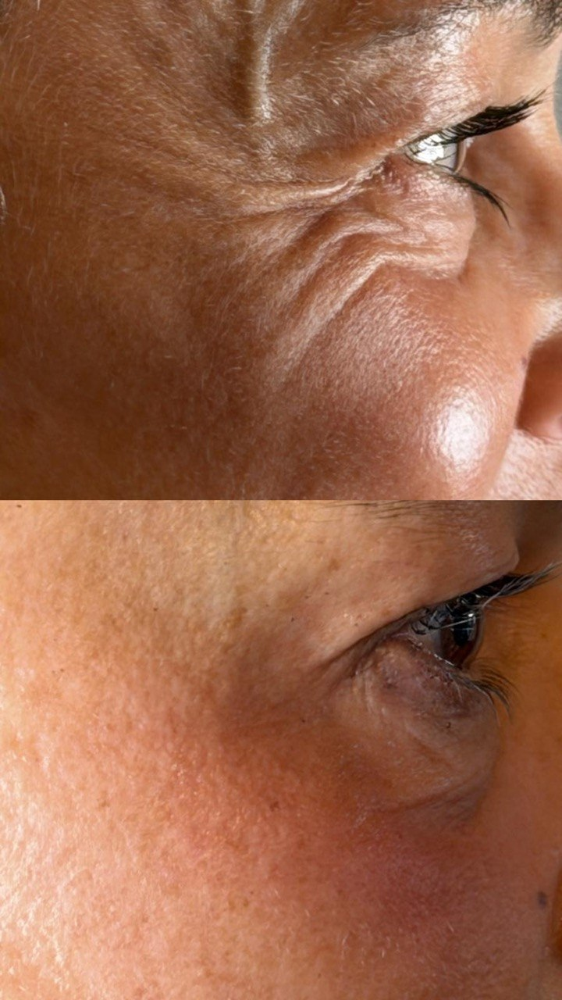

Forma® by InMode ist eine innovative, nicht-invasive Radiofrequenzbehandlung für Gesicht und Körper und zählt zu den modernsten Technologien im Bereich der Hautstraffung und des natürlichen Anti-Agings.
Mithilfe der patentierten A.C.E.-Technologie (Acquire, Control, Extend) wird die Radiofrequenzenergie gleichmäßig und kontrolliert in die tiefen Hautschichten geleitet. Die Haut wird dabei kontinuierlich auf die optimale therapeutische Temperatur erwärmt. Dadurch werden die natürliche Kollagen- und Elastinbildung intensiv angeregt, die Hautelastizität verbessert und das Gewebe von innen heraus nachhaltig gefestigt.
Das Ergebnis ist eine sichtbare Straffung der Haut, definiertere Gesichtskonturen und eine harmonische, jugendliche V-Form. Gleichzeitig wirkt das Gewebe sanft aufgepolstert, die Haut gewinnt an Spannkraft und Ausstrahlung – ganz ohne Operation, Nadeln oder Ausfallzeit.
Forma® eignet sich für alle Hauttypen und ist ideal für alle, die sich eine natürliche Hautverjüngung und Hautstraffung ohne chirurgischen Eingriff wünschen. Die Behandlung verbessert die Hautqualität, verfeinert die Hautstruktur, reduziert feine Linien und Fältchen und sorgt für ein glatteres, strafferes und sichtbar frischeres Hautbild.
Die klinisch untersuchte Radiofrequenztechnologie stimuliert nachweislich die Kollagenneubildung und sorgt für eine nachhaltige Verbesserung der Hautfestigkeit und Hautelastizität.
Mit dem Klick wird das Video von YouTube geladen. Dabei werden Daten an Google übertragen. · Forma® Animation by InMode
Forma® eignet sich sowohl für das Gesicht als auch für nahezu alle Körperregionen, bei denen eine Straffung und Gewebefestigung gewünscht ist.
Für eine sichtbare Transformation und eine nachhaltige Festigung des Gewebes empfehlen wir eine Behandlungskur von acht bis zehn Behandlungen, die im Abstand von jeweils einer Woche durchgeführt wird.
Je nach Hautzustand und individuellem Behandlungsziel können auch weniger Sitzungen ausreichend sein. Nach einer ausführlichen Hautanalyse erstellen wir einen persönlichen Behandlungsplan, der optimal auf Ihre Bedürfnisse abgestimmt ist.
Für optimale und nachhaltige Ergebnisse empfehlen wir eine individuell auf Ihre Haut abgestimmte Heimpflege. Die passenden hochwertigen Medical-Beauty-Pflegeprodukte erhalten Sie direkt bei uns im Institut.
Forma® lässt sich hervorragend mit weiteren Medical-Beauty-Behandlungen kombinieren und dadurch in seiner Wirkung zusätzlich verstärken.
Die Kombination mit Hydrafacial® ist ideal, um die Haut optimal auf die Radiofrequenzbehandlung vorzubereiten. Während Hydrafacial® die Haut intensiv reinigt, sanft exfoliert und mit wertvollen Wirkstoffen versorgt, sorgt Forma® anschließend für eine intensive Straffung und Festigung der tieferen Hautschichten. Das Ergebnis ist ein sichtbar glatteres, strahlenderes und jugendlicheres Hautbild.
Ebenso erzielt die Kombination mit unserem Medical Spezial Skin Needling hervorragende Ergebnisse. Das Needling stimuliert die Hautregeneration und die Kollagenbildung zusätzlich und eignet sich besonders zur Behandlung von Hauterschlaffung, Falten, Aknenarben, vergrößerten Poren sowie einem ungleichmäßigen Hautbild. Gemeinsam entsteht ein nachhaltiges Behandlungskonzept für eine langfristige Hautverbesserung.
Auch in Kombination mit chemischen Peelings oder unserem Crystal Peel entfaltet Forma® seine volle Wirkung. Während die Peelings die Hautoberfläche verfeinern, abgestorbene Hautzellen entfernen und die natürliche Zellerneuerung anregen, stärkt Forma® die tieferen Hautschichten und verbessert dort nachhaltig die Hautstruktur und Spannkraft. Diese Behandlungen ergänzen sich ideal und sorgen für ein sichtbar glatteres, ebenmäßigeres und strafferes Hautbild.
Je nach Hautbild, Hautzustand und persönlichem Behandlungsziel erstellen wir ein individuelles Behandlungskonzept und kombinieren die passenden Therapien für ein optimales und langfristiges Ergebnis.
Beispielergebnisse aus klinischen Anwendungen des Geräteherstellers. Jede Haut reagiert individuell — welches Ergebnis in Ihrem Fall realistisch ist, klären wir persönlich.



Aufnahmen von Kunden des Kosmetikinstituts Hautnah. Ergebnisse sind individuell und können abweichen.




Nein, die Behandlung ist angenehm und schmerzfrei.
Sofort. Es können leichte Rötungen auftreten, die in der Regel nach 1–2 Stunden abklingen und problemlos überschminkt werden können.
FORMA® ist sehr gut verträglich. Gelegentlich können leichte Rötungen auftreten; bei Mini-FX vereinzelt leichte Schwellungen oder blaue Flecken.
Ja, die Behandlung kann individuell angepasst werden und ist auch für empfindliche Haut geeignet.
Ja – die FORMA® Behandlung ist komplett nadelfrei.
Ja, FORMA® eignet sich ideal zur Prävention und ist für jedes Alter geeignet.
„Die Atmosphäre ist entspannt und professionell, die Behandlung war sehr angenehm und meine Haut fühlt sich danach unglaublich frisch und gepflegt an. Man merkt, dass hier mit viel Erfahrung und Leidenschaft gearbeitet wird."
„Die Inhaberin Sabrina war total freundlich, kompetent und hat mir auch die «Scheu» genommen. Das Ergebnis nach ein paar Sitzungen ist wirklich unglaublich!"
„Ich bewundere die Fachkompetenz, mit der sie jede Gesichtsbehandlung ausführlich erklärt, ihr umfassendes Wissen, das über das einer Kosmetikerin weit hinausreicht, ihre freundliche, zuvorkommende Art. … Ich empfehle sie gerne auch meinen Patienten und Patientinnen mit Hautproblemen im Gesicht weiter."
Sie möchten Ihre Haut in Wehr straffen und verjüngen – ganz ohne Eingriff?Wir beraten Sie individuell und erstellen Ihr persönliches Behandlungskonzept.
Zusammenarbeit anfragenSie erreichen mich direkt über WhatsApp – ich melde mich persönlich bei Ihnen.
Chat starten